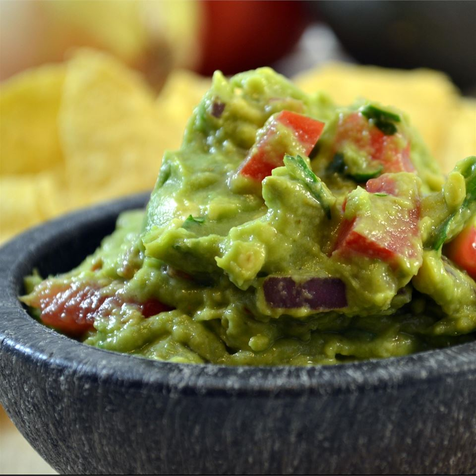

Guacamole

Description
Quick, easy, and delicious guacamole! Add more salt, lime, or
cilantro to your taste preference!
Ingredients:
- 3 avocados, peeled and pitted
- 1 teaspoon sea salt
- 1 teaspoon garlic powder
- 2 tablespoons fresh lime juice
- 1/2 cup diced onion
- 2 roma (plum) tomatoes, diced
- 3 tablespoons of chopped cilantro
- 1 pinch cayenne pepper, or more to taste (optional)
Directions:
- Mash avocados, sea salt, garlic powder, and lime in a bowl
- Mix onion, tomatoes, and cilantro into avocado mix; season with
cayenne pepper.